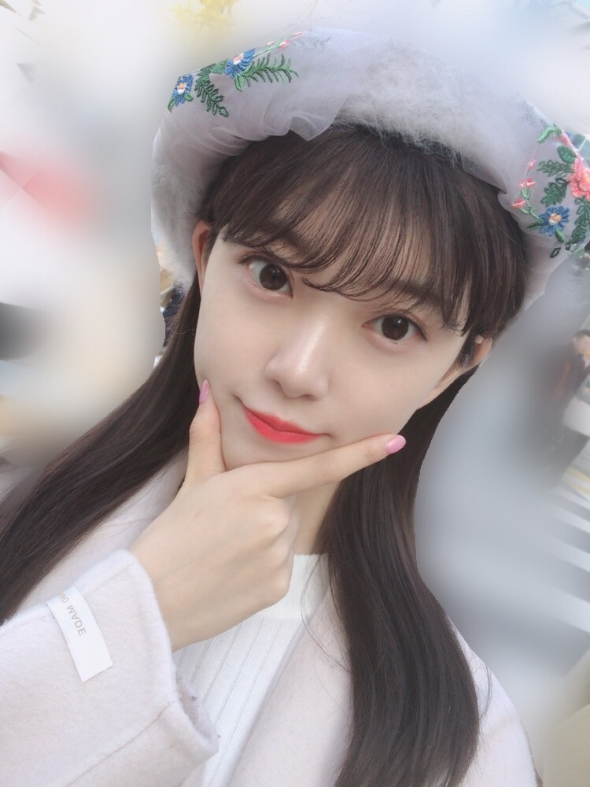
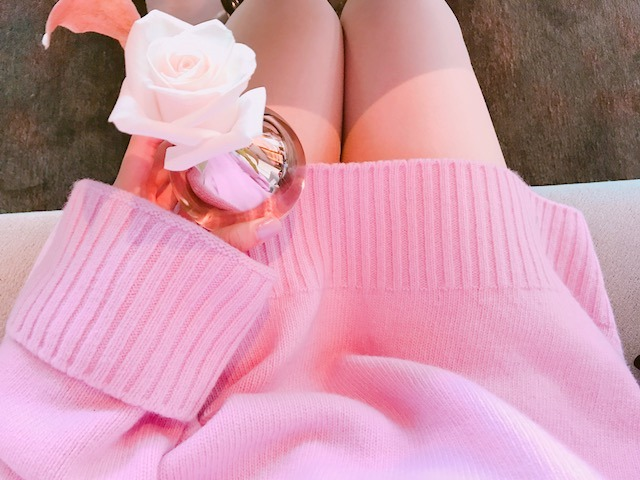

2018/1113Tueちょっぴりおでかけ
CA4LAさんのベレー帽を
新しく買いました☺︎

最近はベレー帽やカチューシャがお気に入りです
※髪の毛いまはショートです
これはレアなロング


Xmas〜
にんまり^^

Rose♪
この日は
イニスフリーのクッションファンデで
肌を艶々にしました♪
冬だから乾燥しないように
気をつけないと〜
乾燥、大敵！
温泉行きたいな〜
今日はNHKうたコン、
うちのガヤがすみませんに
出させていただきます☺︎
今日の私服がまっくろくろすけだったのですが
真夏さんとみささんにかわいいって
言ってもらえてニコニコです頑張ろ！
あー...お気に入りのパジャマが
ニコルとプティの仕業？なのか
洗濯機の仕業？なのか笑
すこし破れてしまいました
ありゃりゃ
また買おう
肌触り重視ですね冬は特に
では！
2018/11/13 15:06
コメント(368)
それはきっと、ニコルとプティがやらかしたのを洗濯機のせいにしたんだと思うよ。
一枚目の写真
神の造形物だろうか
究極のキュート。
一枚目の写真
神の造形物だろうか
究極のキュート。
うたコンみたよー！未央奈ちゃん相変わらず可愛かったし、カチューシャ似合ってた！！！
未央奈～こんばんは！
ぽてとです！
ベレー帽めっちゃ似合ってる！
可愛さに癒された♪
ぽてとです！
ベレー帽めっちゃ似合ってる！
可愛さに癒された♪
韓国に来てくれてありがとう。 楽しかったてすか？
可愛くて韓国風なところがすごくタイプで大好きで憧れですすきすきすきみおちゃーん！！
可愛くて韓国風なところがすごくタイプで大好きで憧れですすきすきすきみおちゃーん！！
こんばんは。ブログ更新ありがとうございます。
写真の花柄の帽子がおニューのベレーですか？柄物のベレー帽は初めてみました！！可愛いですっ！！よく似合ってますね～。
私は夏より冬の方が得意ですが、乾燥が大敵なのは私もそうです。唇やかかとがひび割れて、リップやワセリンが欠かせません。
ではまた。
写真の花柄の帽子がおニューのベレーですか？柄物のベレー帽は初めてみました！！可愛いですっ！！よく似合ってますね～。
私は夏より冬の方が得意ですが、乾燥が大敵なのは私もそうです。唇やかかとがひび割れて、リップやワセリンが欠かせません。
ではまた。
新たなベレー帽、すごく似合ってるねぇ♪♪ 堀ちゃん見てるだけで、何より癒される(*´-`) 日に日に肌寒さも増してる感じだけど、体調気をつけつつ。適度にお仕事頑張ってねぇ☆
未央奈かわいいね！！
うたコンにがやお疲れ様でした～(^-^ゞ
ホントに帽子好きなんだ！乃木中の日村さんの帽子は大笑いさせて頂きました！未央奈ちゃんも大笑いしてたけど〜笑！
笑った顔が天使
ほりっぴ～、ナンチです♪
ブログ更新ありがとう～
ガヤ見たよ
ほりっぴ～の表情豊かさがたくさん出てたよ
めっちゃよかった
温泉の季節になったね
そうだ、箱根に行こう
ブログ更新ありがとう～
ガヤ見たよ
ほりっぴ～の表情豊かさがたくさん出てたよ
めっちゃよかった
温泉の季節になったね
そうだ、箱根に行こう
未央奈ちゃん、こんばんは(^o^)/
髪はエクステかな？
今の短いのも可愛いけど、やっぱり長い方が好きだなぁ(・o・)
髪はエクステかな？
今の短いのも可愛いけど、やっぱり長い方が好きだなぁ(・o・)
ガヤで秋元先生とショートコントしてたね（笑）
今日は乃木坂いっぱい見られて良かった！
明日は17時までバイトだから微妙だけど終わってもやってたら見るのでよろしくー！
今日は乃木坂いっぱい見られて良かった！
明日は17時までバイトだから微妙だけど終わってもやってたら見るのでよろしくー！
うちのガヤとうたコン楽しみ
あっ、まだmステも見てなかった
休みの日にゆっくり見ようーっと
クリスマスは未央奈の笑顔が一番のプレゼントだなぁー
なんとなくファイトw
あっ、まだmステも見てなかった
休みの日にゆっくり見ようーっと
クリスマスは未央奈の笑顔が一番のプレゼントだなぁー
なんとなくファイトw
未央奈ちゃんブログありがとう！
明日 SHOWROOMとレコメン、楽しみにしとるね！
またコメントするね！
明日 SHOWROOMとレコメン、楽しみにしとるね！
またコメントするね！
未央奈ちゃん、ひろっしーです！コメント投稿531回目です！
前回はブログ「girls_blog_♡」にモバメの感想を書きました！
時間→「No.368 2018年11月11日 01:47」
ブログ更新ありがとうございます！
「うたコン！」もショートだったので、ロング未央奈ちゃんになっててビックリしましたが、レアなロングと書かれてたので納得しました！可愛い写真沢山載せてくれて凄く嬉しいです！
早いものでクリスマスの季節かぁ！サンタ姿のブラウンも可愛いけど、未央奈ちゃんのサンタ姿も見たいな～！今年もお願いします！それにしてもブラウン大きいね！未央奈ちゃんの顔がブラウンの鼻より小さくてビックリしました！可愛さも小顔のレベルもトップクラスですね！
モバメ同様ブログでもにんまりしてますね(癒)
最後の写真、Roseより先にThighsを見ちゃいました！絶対領域にドキドキ！ってコラッ(笑)
「うたコン！」観ました！若様のポジションをまなったんがされていましたね！いつもと違う演出でしたが、この演出きっと偶然じゃないと思います！とにかく凄く良かったです！
歌唱シーンは勿論ですが、雛壇のみなみおなが凄く可愛かったです！このツーショット久々に感じました！なんか、みなみおなのユニット曲聴きたくなりました！来年あたり、どうかな？
モバメ毎日ありがとうございます！
昨日のお昼に届いたのに、もう夜中ですね(謝)
名前を書いてくれてありがとうございました！「ひろっしーおはよ☺︎」名前があるといつもと違って特別感があり、より嬉しかったです！
新曲早く聴きたいしMVと個人PV観たいな～！幻想的で現実的な個人PV楽しみにしてます！
にんまり写真に僕までにんまりしちゃった(癒)
後ろのクッションの目がちょっと怖いけど(笑)
ここまで読んで頂きありがとうございました！
毎日お仕事お疲れ様です！体調にはくれぐれも気を付けて頑張ってくださいね！
おやすみおな～！
前回はブログ「girls_blog_♡」にモバメの感想を書きました！
時間→「No.368 2018年11月11日 01:47」
ブログ更新ありがとうございます！
「うたコン！」もショートだったので、ロング未央奈ちゃんになっててビックリしましたが、レアなロングと書かれてたので納得しました！可愛い写真沢山載せてくれて凄く嬉しいです！
早いものでクリスマスの季節かぁ！サンタ姿のブラウンも可愛いけど、未央奈ちゃんのサンタ姿も見たいな～！今年もお願いします！それにしてもブラウン大きいね！未央奈ちゃんの顔がブラウンの鼻より小さくてビックリしました！可愛さも小顔のレベルもトップクラスですね！
モバメ同様ブログでもにんまりしてますね(癒)
最後の写真、Roseより先にThighsを見ちゃいました！絶対領域にドキドキ！ってコラッ(笑)
「うたコン！」観ました！若様のポジションをまなったんがされていましたね！いつもと違う演出でしたが、この演出きっと偶然じゃないと思います！とにかく凄く良かったです！
歌唱シーンは勿論ですが、雛壇のみなみおなが凄く可愛かったです！このツーショット久々に感じました！なんか、みなみおなのユニット曲聴きたくなりました！来年あたり、どうかな？
モバメ毎日ありがとうございます！
昨日のお昼に届いたのに、もう夜中ですね(謝)
名前を書いてくれてありがとうございました！「ひろっしーおはよ☺︎」名前があるといつもと違って特別感があり、より嬉しかったです！
新曲早く聴きたいしMVと個人PV観たいな～！幻想的で現実的な個人PV楽しみにしてます！
にんまり写真に僕までにんまりしちゃった(癒)
後ろのクッションの目がちょっと怖いけど(笑)
ここまで読んで頂きありがとうございました！
毎日お仕事お疲れ様です！体調にはくれぐれも気を付けて頑張ってくださいね！
おやすみおな～！
ブログ更新ありがと！
堀さん、こんばんは。
ロングもベレー帽もとてもお似合いですね。（ベレー帽がべれぼう（べらぼう）に似合いますねって書くか止めるか迷ったんですけど止めます）
CDTVのカチューシャも可愛かったです。
あとうたコンも見ました。生演奏も豪華で見ごたえありました。僕は「互いにわかるだろう」の所が曲の中で気に入ってるんですけど、振りの手の動きがなんだか葉っぱが落ちていく時みたいに綺麗で好きです。あと最初に全員で回る所が、変身したって感じがして好きです。
ウチのガヤも見ました。出演できて良かったですね。ボトルキャップで狙われるくだりは謎に満ちてて面白かったです。きっと関さんにとって堀さんが印象的な存在だったんでしょうね。
それにしても熊の人形の大きさ凄いですね。上のほうにある手形は誰かが垂直飛びでもしたのでしょうか。それで倒すところ想像したら怖くなります。もし倒しても「トトロっていうのねぇ」で何とか切り抜けたいですね。そんなことよりタイトルのおでかけの話がレコメンで聞けるのを楽しみしてます。
あと、にんまりの顔が可愛すぎて笑ってしまいました。堀さんの顔の明るさも可愛さも好きです。可愛くてありがとうございます。ブログ更新してくれて嬉しいです。いいパジャマを巡る旅も頑張ってください。
ロングもベレー帽もとてもお似合いですね。（ベレー帽がべれぼう（べらぼう）に似合いますねって書くか止めるか迷ったんですけど止めます）
CDTVのカチューシャも可愛かったです。
あとうたコンも見ました。生演奏も豪華で見ごたえありました。僕は「互いにわかるだろう」の所が曲の中で気に入ってるんですけど、振りの手の動きがなんだか葉っぱが落ちていく時みたいに綺麗で好きです。あと最初に全員で回る所が、変身したって感じがして好きです。
ウチのガヤも見ました。出演できて良かったですね。ボトルキャップで狙われるくだりは謎に満ちてて面白かったです。きっと関さんにとって堀さんが印象的な存在だったんでしょうね。
それにしても熊の人形の大きさ凄いですね。上のほうにある手形は誰かが垂直飛びでもしたのでしょうか。それで倒すところ想像したら怖くなります。もし倒しても「トトロっていうのねぇ」で何とか切り抜けたいですね。そんなことよりタイトルのおでかけの話がレコメンで聞けるのを楽しみしてます。
あと、にんまりの顔が可愛すぎて笑ってしまいました。堀さんの顔の明るさも可愛さも好きです。可愛くてありがとうございます。ブログ更新してくれて嬉しいです。いいパジャマを巡る旅も頑張ってください。
うたこん♪「帰り道は遠回りしたくなる」素敵な楽曲やわぁ♪堀殿♡発見!(ó㉨ò)ﾉ♡ ウチのガヤ観ました～そろりそろりゲーム♡ボトルキャップ野球♡お〇相撲♡アングリーゲーム♡軍手リレー♡遠吠え♡リズム縄跳び♡システマPK♡すぎょい!スフレパンケーキプリンうまぺろんぬそうだぷーでばいころまる( ;-(ｴ)-)ゞｸﾏｯﾀﾅｧ…
未央奈さん、こんなにロングヘアーだったっけ！
ちょっと前までロングだったのに、時の流れは早いなぁ。
今となっては貴重ですな。
ベレー帽ステキです。
ちょっと前までロングだったのに、時の流れは早いなぁ。
今となっては貴重ですな。
ベレー帽ステキです。
にんまりかわいいすぎ！
堀さん、おはようございます。
お写真は帽子もコートもふわふわしていて暖かそうでかわいらしい。もう街の空気もすっかり晩秋……というよりクリスマスの雰囲気ですね。あわただしいけれど楽しみたいと思います。
本日は乃木坂46の22枚目シングルの発売日。おめでとうございます。すてきな曲やMVや特典映像の詰まった贈り物、今日受け取りにいってきます。幸せな水曜日になりそうです。
『うちのガヤがすみません』観ました。秋元先生の打ったボールが堀さん直撃しなくてよかったですね……こほん、あー残念でしたねえ（棒読み 笑）。
ではまたコメントします。
さらばだ、また会おう！（気球に乗って去りぬ〜）
お写真は帽子もコートもふわふわしていて暖かそうでかわいらしい。もう街の空気もすっかり晩秋……というよりクリスマスの雰囲気ですね。あわただしいけれど楽しみたいと思います。
本日は乃木坂46の22枚目シングルの発売日。おめでとうございます。すてきな曲やMVや特典映像の詰まった贈り物、今日受け取りにいってきます。幸せな水曜日になりそうです。
『うちのガヤがすみません』観ました。秋元先生の打ったボールが堀さん直撃しなくてよかったですね……こほん、あー残念でしたねえ（棒読み 笑）。
ではまたコメントします。
さらばだ、また会おう！（気球に乗って去りぬ〜）
帽子も服も似合いすぎ！
うたコンとうちのガヤ見たよ！
うたコンは演奏も相まって迫力あったし
ガヤは笑ったな～
みおなのリアクション本当好き◎
シングルCDも買ったよー
楽しみにしてたみおなの個人PV見て
みおなの乃木坂人生そのものだって思った。
きっと焦らずゆっくりでいい、っていう
何かのきっかけを表してるのが藤袴で
それを今でも大切に
心に留め続けてるんだなって
花を受け取ったあとのね、
花畑の景色がそれ以前のと少しちがってて
それが単に闇が消えただけじゃないから
成長して同じ景色でもちがう視野で
ちがうものに見られるようになったんだな
とか、
最後のモノクロのところは心の世界で
みおなが好きな何色にも染まれる
白の考え方を表してるんじゃないかとか
もうとにかくみおなであふれてた！
とても素敵な作品でした
みおなはきっとPVの最後みたいに振り向かず
これからも前へ進んで行くんだろうな
その時はもちろんファンも一緒だよ(^-^)
うたコンは演奏も相まって迫力あったし
ガヤは笑ったな～
みおなのリアクション本当好き◎
シングルCDも買ったよー
楽しみにしてたみおなの個人PV見て
みおなの乃木坂人生そのものだって思った。
きっと焦らずゆっくりでいい、っていう
何かのきっかけを表してるのが藤袴で
それを今でも大切に
心に留め続けてるんだなって
花を受け取ったあとのね、
花畑の景色がそれ以前のと少しちがってて
それが単に闇が消えただけじゃないから
成長して同じ景色でもちがう視野で
ちがうものに見られるようになったんだな
とか、
最後のモノクロのところは心の世界で
みおなが好きな何色にも染まれる
白の考え方を表してるんじゃないかとか
もうとにかくみおなであふれてた！
とても素敵な作品でした
みおなはきっとPVの最後みたいに振り向かず
これからも前へ進んで行くんだろうな
その時はもちろんファンも一緒だよ(^-^)
堀ちゃん、大好きだよー
未央ちゃん
ブログ更新ありがとう
ベレー帽かわいいね
レコメン頑張ってね
体調気をつけて
ブログ更新ありがとう
ベレー帽かわいいね
レコメン頑張ってね
体調気をつけて
未央奈ちゃん更新ありがとー！
写真たくさんありがとう！
ベレー帽似合ってるよ！
相変わらず可愛い(^_^)
よし今日も１日頑張ってこー！！
未央奈ちゃんが活力です！
写真たくさんありがとう！
ベレー帽似合ってるよ！
相変わらず可愛い(^_^)
よし今日も１日頑張ってこー！！
未央奈ちゃんが活力です！
みおなー！
ブログ更新ありがとう！
大好き！
未央奈ちゃんありがとうございます！頑張ります‼頑張って下さい！ありがとうございます！頑張ります‼頑張って下さい。ありがとうございます
ウチガヤで秋元先生に狙われたね。
やっとブログ書いたT_T
もっとミオナ見たいよー（；＿；）
好きだよミオナ（；＿；）❤️❤️❤️
もっとミオナ見たいよー（；＿；）
好きだよミオナ（；＿；）❤️❤️❤️
ブログの更新ありがとう。
「ちっぴりおでかけ」するだけでも、こんなにもお洒落で可愛い未央奈なんだね。
カチューシャ姿の未央奈をTV等で見かけるけど、片耳を出す＋イヤリング＋カチューシャの組み合わせが未央奈にスッゴク似合っていて好きだよ。
未央奈の目を細めて幸せそうに笑うところ、笑い声が大好きで、テレビや握手会で未央奈が笑っていると癒されるし幸せな気持ちになるんだよね。
だからブログに載せてくれた4枚目の「にんまりニコニコ未央奈」の写真がスッゴクお気に入りで、すぐに携帯の壁紙にしちゃったよ。
お気に入りのパジャマが破れたのが、ニコルくん・プティの仕業だとしても、可愛いニコルくん・プティくんがやったことなら未央奈ならすぐに許しちゃうんだろうな。
家の愛猫は洗濯物が大好きで、洗濯して畳んだ洗濯物の上で寝ちゃったり、洗濯物でじゃれたり、選択等を畳もうとすると邪魔してくるんだけど、可愛いから許しちゃうんだよね。
冬の乾燥は天敵だよね。
最近は喉が痛くて・・・冬の乾燥にやられかも
お互いに乾燥に気を付けて頑張ろうね。
ゴロ～
「ちっぴりおでかけ」するだけでも、こんなにもお洒落で可愛い未央奈なんだね。
カチューシャ姿の未央奈をTV等で見かけるけど、片耳を出す＋イヤリング＋カチューシャの組み合わせが未央奈にスッゴク似合っていて好きだよ。
未央奈の目を細めて幸せそうに笑うところ、笑い声が大好きで、テレビや握手会で未央奈が笑っていると癒されるし幸せな気持ちになるんだよね。
だからブログに載せてくれた4枚目の「にんまりニコニコ未央奈」の写真がスッゴクお気に入りで、すぐに携帯の壁紙にしちゃったよ。
お気に入りのパジャマが破れたのが、ニコルくん・プティの仕業だとしても、可愛いニコルくん・プティくんがやったことなら未央奈ならすぐに許しちゃうんだろうな。
家の愛猫は洗濯物が大好きで、洗濯して畳んだ洗濯物の上で寝ちゃったり、洗濯物でじゃれたり、選択等を畳もうとすると邪魔してくるんだけど、可愛いから許しちゃうんだよね。
冬の乾燥は天敵だよね。
最近は喉が痛くて・・・冬の乾燥にやられかも
お互いに乾燥に気を付けて頑張ろうね。
ゴロ～
写真たくさんありがとう！
ベレー帽めっちゃ似合っとってかわいい！
うたコン
うちのガヤがすみません、見たよー
テレビでたくさん堀ちゃんのこと見れて嬉しいな
ベレー帽めっちゃ似合っとってかわいい！
うたコン
うちのガヤがすみません、見たよー
テレビでたくさん堀ちゃんのこと見れて嬉しいな
未央奈、今日も一日お疲れさまでした。
ベレー帽、似合ってますね。
モバメで送ってくれた画像も可愛すぎました。。
ほかの画像もそうだけど、白が似合ってます。
この季節の未央奈って、白か黒かどっちかしか選んでないイメージあるかも。。。
僕も冬に近づくと、全身まっくろくろすけになるなぁ…笑 黒ってシュッとしてかっこよく見えるというか。。自然と選んでしまう色。なので、今年の冬も僕は真っ黒で過ごすと思います。
未央奈の今年の冬のファッションも気になるところ。冬はこれから。楽しみにm(_ _)m
755で言ってたことで、ちょこっとお話しを。。
自分が成し遂げたことは、ほかの誰にもできない自分にしかできなかったこと。何を言われようが、その行動をしたことは誇りに思っていい。努力は報われないことが多いけど、たまに叶うから次も頑張ろうって思えるのかもしれないし。。
未央奈はいつも自分のために、誰かのためにって思いながら頑張ってる。時には一人で泣いて、笑って過ごす日もあるかもだけど「一人で良い」って考えにさせた世界が良くないのかもしれないなって、ふと思って。
僕らは与えられてばかりで、教えられてばかりで、応援してるって言っても、何も恩返しができてないのかなって。
未央奈がこれまで残してきたものが、何か一つ実って夢に近づいてほしい。そう願うことばかりが募る日々で少し申し訳ないけれど、これだけ頑張ってるんだから幸せになってもらいたいし、夢が叶ってほしいなって、心から思ってます。
いつもありがとう。
未央奈の優しさが、毎日の励みです。
じゃあ、最後に。
乾燥が気になってくる時期なので、喉の心配もしてたけど、肌の心配もしなきゃなんだって、ブログを読みながら思いました。大変だと思いますが、継続して気を配っていきましょ。。。
ではでは、ねこでした。
ブログの更新ありがとう。
「ちっぴりおでかけ」するだけでも、こんなにもお洒落で可愛い未央奈なんだね。
カチューシャ姿の未央奈をTV等で見かけるけど、片耳を出す＋イヤリング＋カチューシャの組み合わせが未央奈にスッゴク似合っていて好きだよ。
未央奈の目を細めて幸せそうに笑うところ、笑い声が大好きで、テレビや握手会で未央奈が笑っていると癒されるし幸せな気持ちになるんだよね。
だからブログに載せてくれた4枚目の「にんまりニコニコ未央奈」の写真がスッゴクお気に入りで、すぐに携帯の壁紙にしちゃったよ。
お気に入りのパジャマが破れたのが、ニコルくん・プティの仕業だとしても、可愛いニコルくん・プティくんがやったことなら未央奈ならすぐに許しちゃうんだろうな。
家の愛猫は洗濯物が大好きで、洗濯して畳んだ洗濯物の上で寝ちゃったり、洗濯物でじゃれたり、選択等を畳もうとすると邪魔してくるんだけど、可愛いから許しちゃうんだよね。
冬の乾燥は天敵だよね。
最近は喉が痛くて・・・冬の乾燥にやられかも
お互いに乾燥に気を付けて頑張ろうね。
ゴロ～
「ちっぴりおでかけ」するだけでも、こんなにもお洒落で可愛い未央奈なんだね。
カチューシャ姿の未央奈をTV等で見かけるけど、片耳を出す＋イヤリング＋カチューシャの組み合わせが未央奈にスッゴク似合っていて好きだよ。
未央奈の目を細めて幸せそうに笑うところ、笑い声が大好きで、テレビや握手会で未央奈が笑っていると癒されるし幸せな気持ちになるんだよね。
だからブログに載せてくれた4枚目の「にんまりニコニコ未央奈」の写真がスッゴクお気に入りで、すぐに携帯の壁紙にしちゃったよ。
お気に入りのパジャマが破れたのが、ニコルくん・プティの仕業だとしても、可愛いニコルくん・プティくんがやったことなら未央奈ならすぐに許しちゃうんだろうな。
家の愛猫は洗濯物が大好きで、洗濯して畳んだ洗濯物の上で寝ちゃったり、洗濯物でじゃれたり、選択等を畳もうとすると邪魔してくるんだけど、可愛いから許しちゃうんだよね。
冬の乾燥は天敵だよね。
最近は喉が痛くて・・・冬の乾燥にやられかも
お互いに乾燥に気を付けて頑張ろうね。
ゴロ～
今日も未央奈かわいい！コートどこのか知りたいな
未央奈♫
ブログ更新ありがとう。
今日のレコメン楽しみにしとるよ〜〜
あと、パジャマ姿の写真をパシャリしてあげて欲しい^_^
PS歌番組見てるし頑張ってな
ａｒ見たよ。今月も最高だね。
更新有難う！
お疲れ様でした！
常に可愛い、未央奈を見て、
吾輩の一日を素晴らしくした。
何時も頑張ってね～
ずっと大好き！
お疲れ様でした！
常に可愛い、未央奈を見て、
吾輩の一日を素晴らしくした。
何時も頑張ってね～
ずっと大好き！
SHOWROOM見るね。頑張って。
僕は、犬ちゃんではなく猫ちゃんのアバターだけど許してね。
僕は、犬ちゃんではなく猫ちゃんのアバターだけど許してね。
こんにちは
22ndリリースおめでとうございます✨
CA4LAさんのベレー帽姿カワイイですよ！
未央奈ポーズもやっぱり決まってますね♡
大きなクマさんもとっても偉大だし、
今回はXmas感でキラキラですね～☆
ピンク色とローズもとても悩ましいし、
いつもキラキラ感をくれてありがとう～♡
うたコンでも沢山映ってて嬉しかったし、
ガヤでは秋元先生の振りも嬉しかったです♪
うたコンでは、、
ひなちまはchayさんに似てると思ったし、
丘みどりさんは、
桐谷美玲さんに似てるなと思って好きです♪
今晩もレコメン！とっても楽しみです☺
22ndリリースおめでとうございます✨
CA4LAさんのベレー帽姿カワイイですよ！
未央奈ポーズもやっぱり決まってますね♡
大きなクマさんもとっても偉大だし、
今回はXmas感でキラキラですね～☆
ピンク色とローズもとても悩ましいし、
いつもキラキラ感をくれてありがとう～♡
うたコンでも沢山映ってて嬉しかったし、
ガヤでは秋元先生の振りも嬉しかったです♪
うたコンでは、、
ひなちまはchayさんに似てると思ったし、
丘みどりさんは、
桐谷美玲さんに似てるなと思って好きです♪
今晩もレコメン！とっても楽しみです☺
未央奈ちゃん、ひろっしーです！コメント投稿532回目です！
前回はブログとモバメの感想を書きました！
時間→「No.269 2018年11月14日 01:50」
モバメ毎日ありがとうございます！
実は・・・「のぎおび」と「レコメン！」なんですが、今日は準夜勤なので残念ながら観られなくなりました！あと「レコメン！」もリアルタイムで聴けなくなりました！分かっとったら休みにしとったのにな～(謝) ごめんなさい！
どうにかしてチェックさせて頂きます！
ブログ、モバメ、755、どれも頻繁に更新してくださりありがとうございます！昨日の755に
「ファンの人がいるから私たちアイドルは頑張れる」
「だから私たちも誰かの活力源になれるよう、もっともっと輝きます！！」
と書かれていましたが、あなたたちアイドルがいるから僕らファンは頑張れます！それにもう十分活力源を頂いているのにこれ以上頂いたら申し訳なくなります！凄く嬉しいけど(笑) 僕も未央奈ちゃんを支えられるように頑張ります！
努力についても書かれていましたが、凄く深い言葉ですね！本当にその通りだと思いました！絶対自分のためになるし、確かにしなかったら何も生まれませんしね！
ヨシッ！僕も努力しまくるぞ！
「のぎおび」と「レコメン！」ファイトです！
もう少ししたら準夜勤行ってきます！またね！
ここまで読んで頂きありがとうございました！
毎日お仕事お疲れ様です！体調にはくれぐれも気を付けて頑張ってくださいね！
ではでは！
前回はブログとモバメの感想を書きました！
時間→「No.269 2018年11月14日 01:50」
モバメ毎日ありがとうございます！
実は・・・「のぎおび」と「レコメン！」なんですが、今日は準夜勤なので残念ながら観られなくなりました！あと「レコメン！」もリアルタイムで聴けなくなりました！分かっとったら休みにしとったのにな～(謝) ごめんなさい！
どうにかしてチェックさせて頂きます！
ブログ、モバメ、755、どれも頻繁に更新してくださりありがとうございます！昨日の755に
「ファンの人がいるから私たちアイドルは頑張れる」
「だから私たちも誰かの活力源になれるよう、もっともっと輝きます！！」
と書かれていましたが、あなたたちアイドルがいるから僕らファンは頑張れます！それにもう十分活力源を頂いているのにこれ以上頂いたら申し訳なくなります！凄く嬉しいけど(笑) 僕も未央奈ちゃんを支えられるように頑張ります！
努力についても書かれていましたが、凄く深い言葉ですね！本当にその通りだと思いました！絶対自分のためになるし、確かにしなかったら何も生まれませんしね！
ヨシッ！僕も努力しまくるぞ！
「のぎおび」と「レコメン！」ファイトです！
もう少ししたら準夜勤行ってきます！またね！
ここまで読んで頂きありがとうございました！
毎日お仕事お疲れ様です！体調にはくれぐれも気を付けて頑張ってくださいね！
ではでは！
未央奈 こんにちは！
うたコン、ウチガヤ 観たよ。
新曲のお腹をポンポンするところ 好き。
あと、ウチガヤの時、「えー」驚いてるところ とか 満面の笑み とか 良かった。良かった。
ベレー帽 本当に似合う。羨ましい。カチューシャもね。
努力って、一歩前に進むことだと思ってます。
結果とか報われる とかは、ずーっと後から振り返って解る事。
それぞれの一歩の歩幅は違うし、いろいろな坂道があるから。
一歩前に進んで、いろいろな景色を見たいからね。
だから、「頑張る」って言葉 好きです。
未央奈は未央奈のままで、
最高の笑顔を！
うたコン、ウチガヤ 観たよ。
新曲のお腹をポンポンするところ 好き。
あと、ウチガヤの時、「えー」驚いてるところ とか 満面の笑み とか 良かった。良かった。
ベレー帽 本当に似合う。羨ましい。カチューシャもね。
努力って、一歩前に進むことだと思ってます。
結果とか報われる とかは、ずーっと後から振り返って解る事。
それぞれの一歩の歩幅は違うし、いろいろな坂道があるから。
一歩前に進んで、いろいろな景色を見たいからね。
だから、「頑張る」って言葉 好きです。
未央奈は未央奈のままで、
最高の笑顔を！
すっごくかわいいです
お洋服は全てどちらのものですか☺️ ？
リップもかわいいです
教えていただければ幸いです
お洋服は全てどちらのものですか☺️ ？
リップもかわいいです
教えていただければ幸いです
相変わらず可愛いね、みおな(^-^)☆
ブログ更新ありがとう！
オシャレだし、肌白いし可愛すぎです…
オシャレだし、肌白いし可愛すぎです…
ブログ更新ありがとうございます！
新曲買いました！
ゆっくり聴きますね。
体調に気をつけてください。
いつも応援しています！
新曲買いました！
ゆっくり聴きますね。
体調に気をつけてください。
いつも応援しています！


わぁー、クリスマス感がすごいね
その大きいクマは何だろ？？
おうちで飼えるのかなー？
真夏さんと美彩せんぱいは本当に優しいなぁ
メンバーの良いエピソードの中に度々登場する２人だよねっ！
パジャマは大変だったね。
ちなみに僕はmy裁縫箱（だいぶ前にネットショップで買ったお気に入り☆）を持っていて、衣類とか破れたりしたら縫って補強するよ
ずっと使っている物は日頃からお世話になっている大事なパートナーなので、できる限り捨てたくないんだよね～。
だから、補強してまだ使える物は極力使い続けるよ！
修復不可能で捨てざるを得ない物は、仕方なく涙涙のお別れ
『うちのガヤがすみません』は録画予約しといたよ～。
実はどんな番組か知らないんだよね、へへへ、楽しみ♪